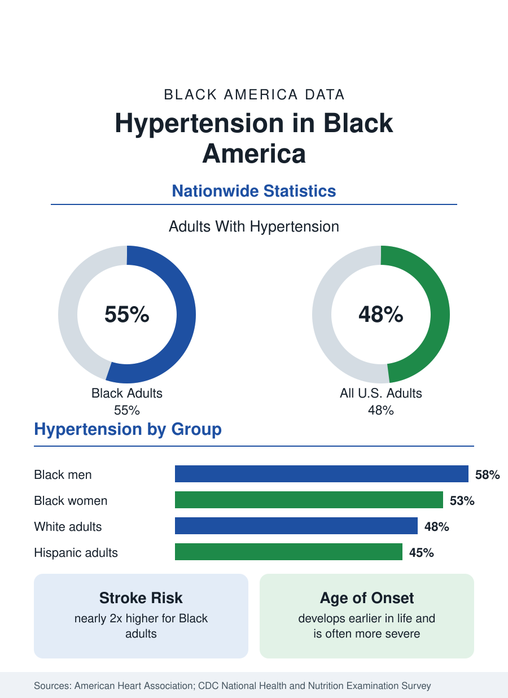

Black Public Health
Hypertension Among Black Adults: Prevalence, Control, and Consequences
About 55 percent of Black adults have hypertension — the highest rate of any U.S. group. Prevalence, onset, control, and the stroke, heart, and kidney consequences in the data.

Hypertension — chronically elevated blood pressure — is the most common major chronic condition among Black adults in the United States, and it is the condition around which much of Black public health data is organized. About 55 percent of Black adults have hypertension, the highest prevalence of any racial or ethnic group in the country, compared with about 48 percent of all United States adults. This article summarizes what the federal and clinical data show about prevalence, onset, control, and consequences, and explains how the condition is defined and measured.
How Hypertension Is Defined and Measured
Blood pressure is recorded as two numbers: systolic pressure, measured when the heart contracts, and diastolic pressure, measured when it rests. Under the guidelines issued by the American College of Cardiology and the American Heart Association, normal blood pressure is below 120/80 mm Hg; stage 1 hypertension begins at 130/80; and stage 2 begins at 140/90. Prevalence figures in this article follow that threshold, which the major national surveys adopted in their reporting. Because a single reading can be distorted by pain, caffeine, or anxiety, surveys such as the National Health and Nutrition Examination Survey base their estimates on the average of several measurements taken under standardized conditions.
Prevalence by Group
The prevalence gap appears in every national dataset. About 58 percent of Black men and about 53 percent of Black women have hypertension. Among White adults the figure is about 48 percent, and among Hispanic adults about 45 percent. The ordering is consistent across survey cycles, and the gap between Black adults and every other group is larger than the gaps among the other groups themselves. Researchers attribute the pattern to a combination of genetic predisposition, dietary sodium and potassium patterns, obesity rates, chronic stress exposure, and differences in access to preventive care; no single factor accounts for the whole gap.
Earlier Onset and Greater Severity
Black adults do not only develop hypertension more often — they develop it earlier in life and, on average, in more severe form. Elevated readings appear at higher rates among Black adults in their twenties and thirties than among White adults of the same ages, which lengthens the period over which the condition can damage the heart, kidneys, and blood vessels. Average blood pressure levels among Black adults with hypertension also run higher than among other groups, and the condition is more likely to resist single-medication control, more often requiring combinations of two or three drug classes.
Control Rates
Diagnosis is not the weakest link in the chain. Awareness of hypertension among Black adults who have it is comparatively high — most know their condition. The gaps widen at treatment and control: the share of Black adults whose blood pressure is controlled to below 130/80 is lower than the share among White adults with the same diagnosis. Control depends on consistent medication access, affordable prescriptions, regular follow-up visits, home monitoring, and dietary change — each of which is unevenly distributed. Public health programs aimed at the control gap, including pharmacy-based monitoring and community health worker models, are an active area of intervention research.
Consequences: Heart Disease, Stroke, and Kidney Disease
Uncontrolled hypertension drives the conditions that dominate Black mortality statistics. It is the leading modifiable risk factor for stroke, and Black adults suffer strokes at nearly twice the rate of White adults, at younger average ages. It is a principal cause of heart failure, which hospitalizes Black adults at markedly higher rates, and of chronic kidney disease: Black adults progress to kidney failure at roughly three times the rate of White adults, with hypertension and diabetes as the two leading causes. These downstream figures are the reason hypertension prevalence is treated in public health planning not as one statistic among many but as a central measure of population health.
The picture the data draws is therefore twofold. Measured against the nation, hypertension is more prevalent, earlier, more severe, and less controlled among Black adults — and its complications account for a substantial share of the Black-white gaps in stroke, heart failure, and kidney failure. Measured over time, the same datasets show that control is achievable at scale where treatment access and monitoring are consistent, which is why the condition anchors the public health section of this reference and why its related articles — on heart disease, stroke, diabetes, kidney disease, and access to care — return to it throughout.
More in Black Public Health
Diabetes Among Black Adults: Prevalence and Complications
Nearly one in five Black adults has diabetes, diagnosed or undiagnosed — and its complications fall with particular weight. The CDC data on prevalence, control, and outcomes.
Black Life Expectancy: The Gap at Birth and Its Causes
Black life expectancy at birth is about 73 years, roughly five years below the national figure — the summary measure of every health gap in this section. The CDC data.
Health Insurance Coverage Among Black Americans
About one in ten Black Americans is uninsured. Employer plans cover about half, and Medicaid covers roughly one in five — the coverage data behind every health statistic on this site.
Source: American Heart Association, High Blood Pressure statistics; CDC, National Health and Nutrition Examination Survey (NHANES).